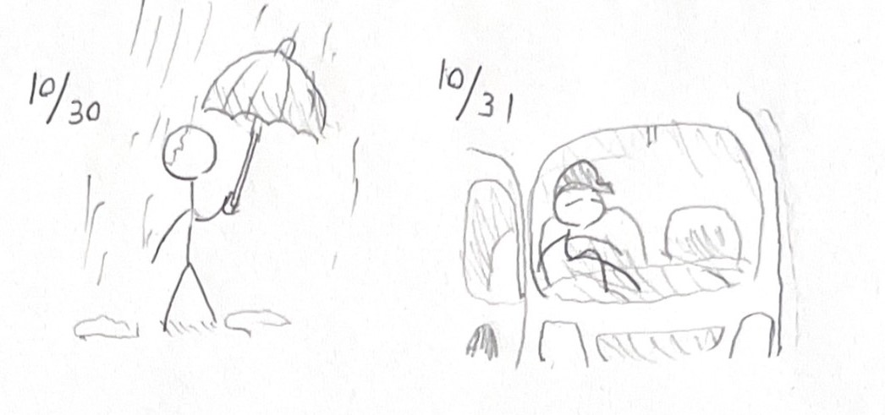
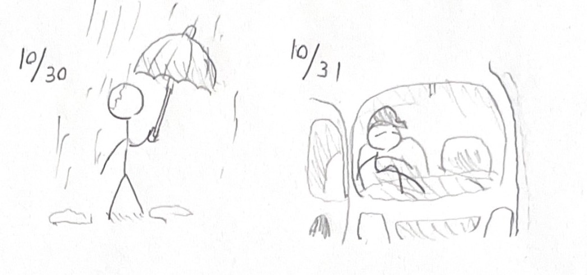

スケッチまとめ
右 10月28日 - 意地でもつり革をつかまない人
左 10月29日 - 真剣な顔で3DSやってる会社員の人  右 10月30日 - ほぼ意味のない傘のさし方してる人
左 10月29日 - すごい体勢で休憩してるトラックドライバーの人 右 11月２日 - 絶対にレジ袋買った方がいい人
左 11月３日 - 歩き方がデフォルトでウキウキな人 右 11月４日 - 間違いなく辛い人
左 11月５日 - 親の仇のように消毒する人
左 10月29日 - 真剣な顔で3DSやってる会社員の人  右 10月30日 - ほぼ意味のない傘のさし方してる人
左 10月29日 - すごい体勢で休憩してるトラックドライバーの人 右 11月２日 - 絶対にレジ袋買った方がいい人
左 11月３日 - 歩き方がデフォルトでウキウキな人 右 11月４日 - 間違いなく辛い人
左 11月５日 - 親の仇のように消毒する人